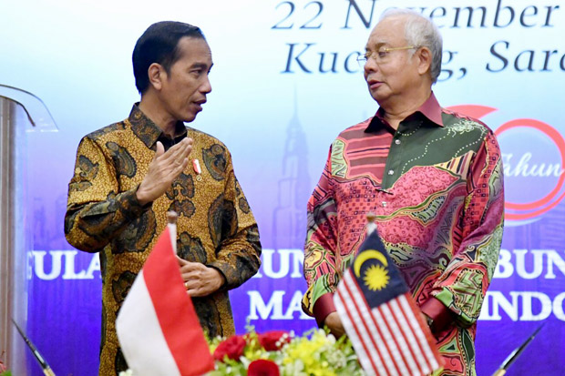
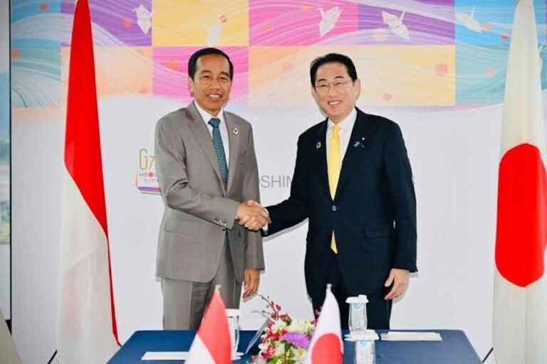
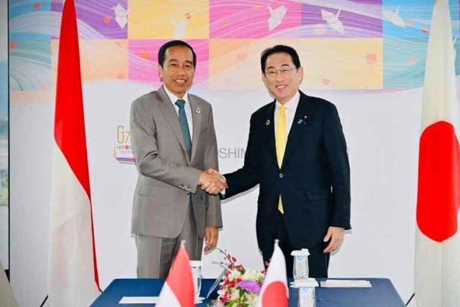

 

Kerjasama bilateral merupakan kerjasama internasional yang melibatkan hubungan antar dua negara yang memiliki hubungan diplomatik dengan tujuan untuk meningkatkan hubungan dan kesejahteraan bagi kedua negara serta memberi keuntungan untuk kedua negara. Kerjasama bilateral mencakup berbagai bidang seperti ekonomi, politik, sosial, dan kebudayaan. Kerjasama bilateral terjadi ketika kedua negara sudah sepakat atas perjanjian yang sudah dibuat.
Dari segi bidang pendidikan, kedua negara sudah sering mengadakan program pertukaran pelajar dan sekolah berasal dari Indonesia sudah mulai diperbanyak di wilayah Malaysia sehingga mulai dibangun asrama bagi pelajar Indonesia saat program pertukaran pelajar ataupun yang bersekolah disana.
Dari segi bidang ekonomi, kedua negara sering kali berpartisipasi dalam investasi dan bisnis kelapa sawit. Mereka juga bekerja untuk memperkuat pasar dan meningkatkan kapasitas perdagangan antar kedua negara.
Dari segi keamanan, kedua negara sudah melaksanakan beberapa pelatihan untuk menjadi pengawas antar perbatasan negara dan agar lebih aman, kedua negara membangun satelit mikro agar kondisi negara mereka dapat dipantau dengan kondisi lebih aman.
Dari segi bidang ekonomi, kedua negara saling bekerja sama dalam kegiatan ekspor .impor, dan investasi melalui perjanjian IJEPA (Indonesia-Japan Economic Partnership Agreement).
Dari segi bidang infrastruktur, Jepang banyak membantu Indonesia dalam pembangunan proyek tol dan transportasi umum (kereta, pelabuhan) agar dapat diakses lebih mudah dan memperlancar kemacetan berat yang terjadi terutama di kota besar.
Dari segi bidang pendidikan, kedua negara melaksanakan program pertukaran pengajar agar pelajar-pelajar dari negara tersebut dapat mengenal budaya masing masing.